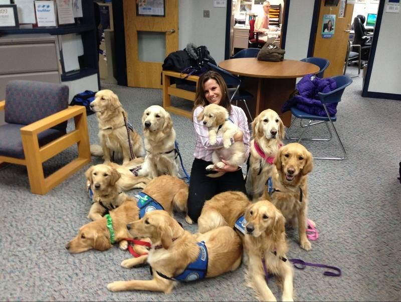

The University of Georgia Stress Dog Day is organized by students, for students. This event consists of the local animal shelter providing a plethera of dogs and bringing them to campus for students to meet. These shelter dogs are full of love and ready for a pat. Not only will you feel relief but these dogs will feel love that they don't get a lot of in the shelter.
SDD is important because the University of Georgia is one of the top public schools in the nation and with that comes hard work and a lot of stress. It is a proven fact that dogs relieve stress. Petting a dog is not only going to be the highlight of your day, but it is scientifically proven that it will also lower your heart rate. During a week full of exams and essays, being in a room full of dogs can introduce laughter into a week of horror.
The Athens Area Humane Society is a donor supported no-kill 501(c)3 non-profit organization dedicated to lowering area euthanasia rates through adoption, spay/neuter, and pet retention programs. It is so important to focus on the rescue and care of animals who would otherwise be euthanized. They are a group of animal welfare activists who started Athens Area Humane Society nearly three decades ago. Their mission is to rescue, spay/neuter, and find homes for animals in Georgia and beyond. They love their animals and we are so lucky to be partnering with them for this event.
Stress Dog Day(s) will take place in the Tate Student Center Courtyard
45 Baxter St. Athens, GA 30602 during finals week. Due to the positve feedback we recieved last semester, we have decided to add more dates and times listed below:| Date | Day of the Week | Time |
|---|---|---|
| 12/01/17 | Friday | 2:00-5:00PM |
| 12/05/17 | Tuesday | 1:00-4:00PM |
| 12/07/17 | Thursday | 2:00-5:00PM |
| 12/13/17 | Wednesday | 10:00AM-2:00PM |